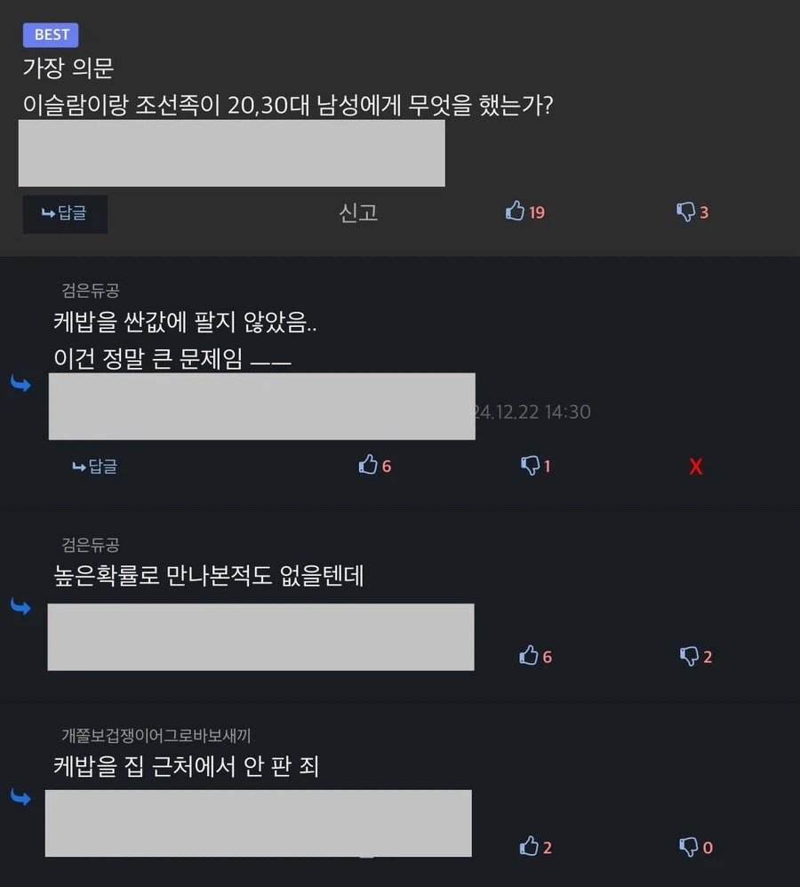
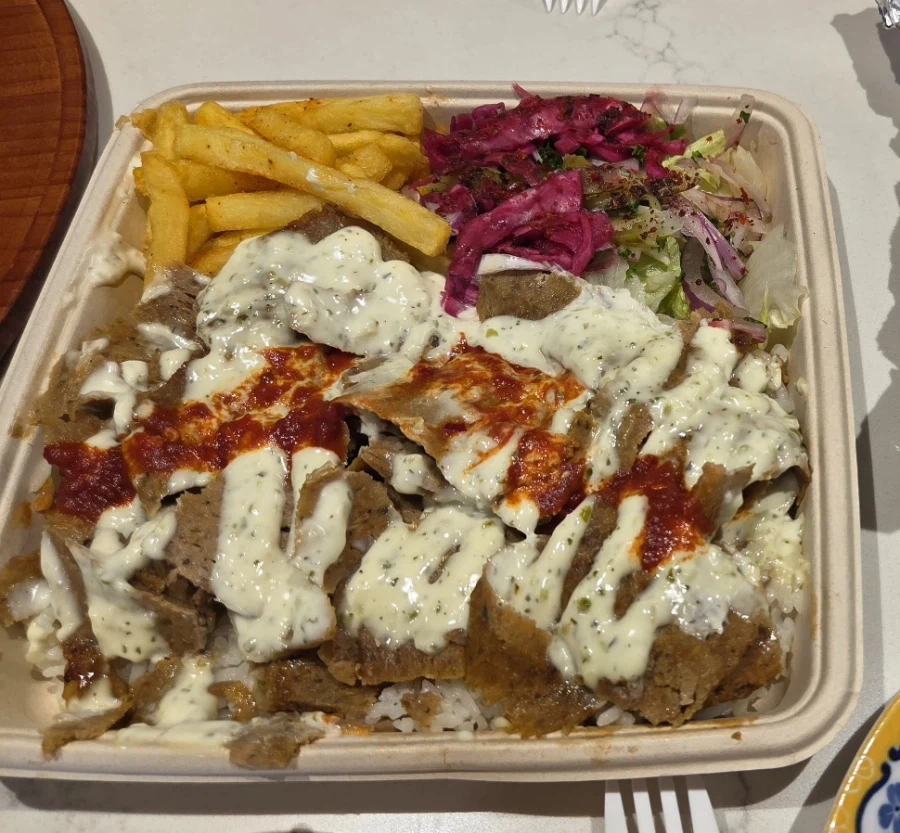

케밥을 싸게 팔지 않음.


케밥을 싸게 팔지 않음.
짤 지리네 지방민은 웁니다
시발 존나 먹고싶다
야시장 열때 케밥 한번 사먹어 봤는데
도무지 이해가 안되는게 그 많은 고깃덩어리를 놔두고 개미눈물만큼 고기를 썰어주면서
비싼돈을 받고 풀떼기만 꾸역꾸역주는지 모르겠더라
고기양이 샐러드만도 못한데 이걸 왜 사먹는지...
최악의 경험이라 케밥은 다신 관심도 안가짐
돈 더 내고 고기추가 하면 돼!
해외에서는 적당한 가격에 푸짐함
이국적인 향신료 베이스의 소고기 닭고기 생선 맛있음
k헬적화의 맛이 어떠냐!
이슬람은 나한테 한게 없는데
조선족은 우리 엄마 보이스피싱함 ㅡㅡ
내 집 주변에서 팔지않음 ㅡㅡ
우우
케밥을 싸게 공급하라
한남동살때 이태원놀러갈때마다 집에가는길에 무조건 앙카라케밥에서 케밥두개씩 포장해왔는데..
진짜 다시 고향으로 내려온것중 가장 아쉬운게 그 케밥못먹는거임..ㅠ
메일로 케밥 보내드렸습니다.
왜 개밥이 들어있죠?
난 맨날 맞은편 킹케밥만 가 봤는데 담엔 함 가봐야겠어.
인천 함박마을에서 이스켄데르 케밥 먹을 수 있는곳 있었는데 지금은 하나 모르겠네
ㅅㅂ 조선족은 마라탕 싸게 팔던데 무슬림은 케밥 존나 비싸게 팜
마라탕 풀떼기 위주에 햄넣으면 7천원 언더러도 가능한데 대학로면 더싸게도 가능. 케밥은 시발 야채에 고기 조금있는 데 10000원 11000원 ㅇㅈㄹ ㅋㅋ서브웨이가는게 나음
실제로 내가 이탈리아에서 제일 맛있게 먹은 피자: 무슬림청년이 만든 케밥피자
생각해보니까 진짜네
씹년들이 가격운 한적화 다 됐는데
야채 양이나 소스, 양고기 안파는거 이런거도 다 한적화 됨
난 진자 인터넷에서 화내지말자주의인데
이건 미친새끼들이라서 너무 화남 ㅜㅜ
할랄가이즈 야스
꼭 직접적인 피해가 있어야만 하는가?
쩐듹 쩐듹 아이스크림도 한번에 안줬음
? : 모짭게쮜~? 멍충멍충~
진짜 우리나라에서 중앙아시아 사람들이 또띠아에 말아서 파는 케밥이랑 독일에서 터키 사람들이 파는 케밥[괴너] 랑은 차원이 다름
생각해보니 그러네
무슬림이 득세해서 길거리에서 자기네들 율법 지키라고 두들겨 패고 다녀도
사실 남자들한텐 별 피해도없고 문제도 없을일이네
자국남성 강제로 끌고가서 노예로 써먹고
다치거나 죽으면 누구세요 느그아들 하는것들이 훨씬 더 문제네
얼마전엔 예비군에서 대놓고 페미세뇌강연도 강제 교육하던데
이거진짜 애국심으로 뭔가를 한다는게 이치에 맞나 싶긴하다
어차피 이 추세면 꽤 많은 남성들은 결혼도 못할거고
여성부와 페미단체 수천개는 지금도 세금으로 두쫀쿠 뚱카롱 열심히 사먹는중인데
문제가 없긴
술은 물론이고
삼겹살 돼지김치찌개 수육보쌈 다 금지한다
팩트는 이슬람이 국교인 나라에서도
외국인을 위해 돼지고기 소고기 대형마트에 다 비치되어있음
물론 잘안보이게 감춰뒀지만
그리고 우리나라가 그정도까지 무슬림 천국이 될리도 없을뿐더러
만약 그정도로 무슬림이 창궐했으면.. 그건 사실 남자들 책임이 아니고...
안산역 케밥집 아조씨는 훈훈하게 주시는데 ㅠㅠ
샤워르마? 샤월마? 샤워마? 그게 좋아
피해망상을 갖게 만든 죄가 얼마나 큰 지 모름?
이게 사회에 얼마나 큰 피해인데
우리동네 가게도 저렇게 줬음 좋겠다 맨날 미국식 중식 박스에 채워주니까 먹을땐 편한데 비쥬얼이 너무 짬통같음 ㅋㅋ
인정임
호주살때 일주일에 두세번씩 케밥 먹었는데
한국 케밥은 너무 양이 작음 근데 개비쌈
조 짜서 까만 푸드트럭으로 돌아다니는 케밥 양고기 진짜 맛있다 머학 축제같은거 돌아다니다보면 있다
예에전에 외국인이라고 케밥 고기 더 챙겨주던 아저씨 생각나네